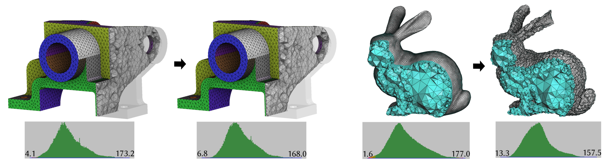
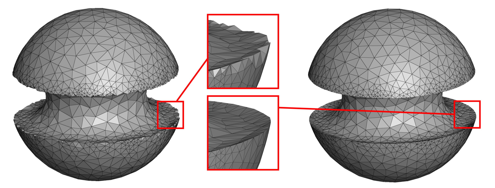
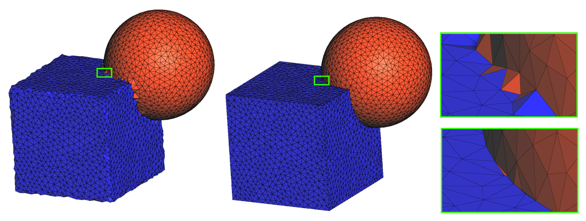

- Generated by
 1.17.0
1.17.0
|
CGAL 6.3 - 3D Mesh Volume Smoothing
|
This package implements an optimization algorithm for improving the quality of volumetric meshes and fitting them to geometric targets, based on the method described in [1]. It can be used to improve an already valid mesh, untangle an invalid mesh, or deform a mesh so that its boundary follows a prescribed geometry.
The algorithm only modifies vertex coordinates. It does not insert or remove vertices, change cell connectivity, or alter the combinatorial structure of the input mesh. Consequently, cell indices, material labels, adjacency relations, and other data attached to the mesh are preserved throughout the optimization. When changes to the mesh connectivity or element sizing are required, the package Tetrahedral Remeshing should be used instead.
The algorithm optimizes vertex positions according to an element-quality energy. It currently uses a conformal energy (MIPS3D) that improves the dihedral angles of the cells. Interior vertices are moved to improve the volume mesh, while boundary vertices can additionally be attracted towards a target geometry.
The energy incorporates a barrier term preventing element inversion. For an initially valid mesh, all accepted optimization steps preserve element orientation, providing a validity guarantee while the element quality is improved. The use of a penalization approach also allows the optimizer to start from an invalid mesh and recover a valid configuration by untangling inverted elements.
Geometric targets can be specified at several dimensions:
Surface patches and curves may be assigned different identifiers, allowing different parts of the mesh to use different target geometries. Constraints are soft and weighted by default, so geometric fidelity can be balanced against element quality. Vertices, or individual coordinate dimensions, can also be locked when hard constraints are required. Combining surface, curve, and point targets allows smooth regions, sharp curves, corners, and user handles to be treated within the same optimization.
By recovering the tangent planes of the target geometry, the smoother can recover curvature discontinuities, enabling automatic feature recovery and preservation.
The main function of the package is CGAL::boundary_aware_mesh_smoothing(), which takes a model of CGAL::MeshComplex_3InTriangulation_3 as input mesh and a model of ConstructTangentSpace for re-projections. The vertex coordinates are then updated to improve element quality and to fit geometric targets.
CGAL::Mesh_smoothing_3::C3t3_mesh_projector provides a model of ConstructTangentSpace to re-project the input mesh into another mesh represented by a model of CGAL::MeshComplex_3InTriangulation_3.
The following example demonstrates the direct use of the smoother on a CGAL::Mesh_complex_3_in_triangulation_3. The tetrahedral mesh is read from a Medit file with its surface patches, and CGAL::boundary_aware_mesh_smoothing() is then called to improve the mesh quality while preserving the input surface patches.
Note that the CGAL reader does not currently read feature edges from Medit files, so the current example only preserves input patches.

Figure 69.1 Running the smoother on mambo_m3.mesh slightly improves the dihedral angles, as the initial mesh is already of good quality for its current geometric target. The elements can slide along their respective patches while preserving sharpness and key features. The bunny.mesh file only contains volume elements; consequently, the smoother does not attempt to preserve any boundary surface. The resulting boundary is therefore less geometrically regular, but the quality of the volume elements is significantly improved.
Example: Mesh_smoothing_3/c3t3_smooth.cpp
This example builds on the example presented in Section Construction from a Vector of Implicit Functions and a Vector of Strings of the 3D Mesh Generation package. After generating a mesh of the implicit domain using CGAL::make_mesh_3, we smooth the mesh using CGAL::Mesh_smoothing_3::Signed_distance_function_projector to project its boundary back onto the implicit domain. This recovers the sharp features formed by the intersection of the implicit surfaces.

Figure 69.2 Mesh generated by CGAL::make_mesh_3 on an implicit domain (left) and result of the smoothing algorithm (right).
Example: Mesh_smoothing_3/implicit_domain_feature_recovery.cpp
This example builds on the example presented in Section Construction of a Hybrid Domain : From an Implicit and a Polyhedral Domain of the 3D Mesh Generation package, but does not explicitly provide the 1-dimensional features of the domain. We extend the hybrid domain so that it becomes a model of ConstructTangentSpace, using CGAL::Mesh_smoothing_3::Polyhedral_mesh_domain_projector for its polyhedral component. The smoothing algorithm can then recover the sharp features from the surface constraints alone.

Figure 69.3 Mesh generated by CGAL::make_mesh_3 on a hybrid domain (left) and result of the smoothing algorithm (center). The close-up on the right shows that, although the features are recovered without creating inverted elements, the local topology of the surface patches can still lead to highly distorted surface facets.
Example: Mesh_smoothing_3/hybrid_domain_feature_recovery.cpp
The optimization method implemented in this package was introduced by François Protais, Gianmarco Cherchi, and Marco Livesu in [1].
The original implementation was developed as part of the Mesh_optimization project. The CGAL implementation was subsequently adapted to operate directly on CGAL::Mesh_complex_3_in_triangulation_3 objects and to expose the geometric fitting mechanism through the concepts ConstructTangentSpace and TangentSpace.
It was initially published in CGAL-6.3.